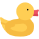
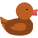
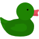

Emulator Duck Pond

1
Кряквы

1
Савки

1
Нырки
1
Резиновые
Кряквы - могут плавать, крякать и летать
Савки - могут плавать, квыкать и летать
Нырки - могут плавать, нырять, крякать и летать
Резиновые - могут плавать и крякать
Начать
Сreated By Tatarinov Yaroslav PI 1-16-1